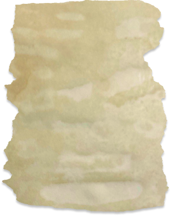
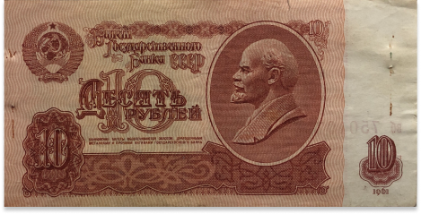
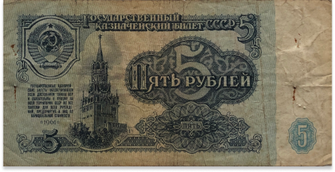
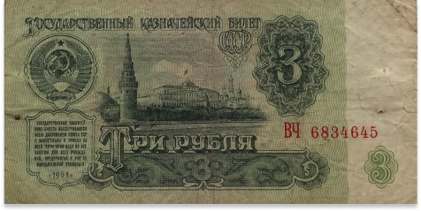
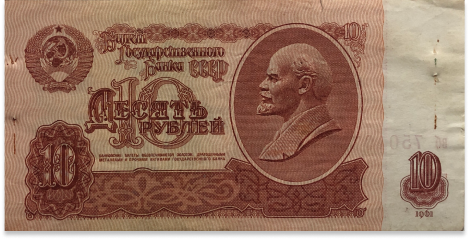
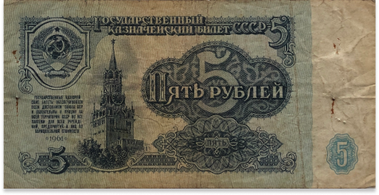
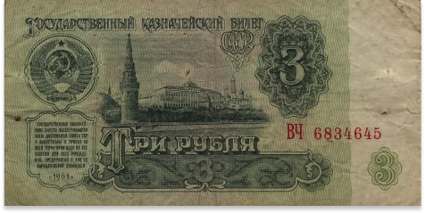

Появление «Русской правды» (первого отечественного свода законов). В этом документе закреплялось право князя на денежный контроль.
Устав, созданный Владимиром Мономахом в XII веке, существенно дополнил и упорядочил «Русскую Правду». Позднее, в период феодальной раздробленности на Руси, право на денежный контроль было вынуждено перейти народному собранию — вече.
о вече
Вече — народное собрание в Древней Руси для обсуждения общих дел, а также для вопросов войны и мира. Вече могло распоряжаться волостными финансами и государственным земельным фондом.
Правление Ивана I Даниловича Калиты.
У Ивана I было прозвище «Калита», которое переводится как «денежная сумка» (тюрк. alta — карман, кожаный мешок)
Получив первым из русских князей право собирать дань, Калита сумел обеспечить Московскому княжеству «передышку» от вторжений Золотой орды. Многие князья оказались в зависимости от московского князя.

Правление Ивана III Васильевича.
Царь создал приказы (приказную систему управления), одним из которых впоследствии была Большáя Казна (точная дата появления неизвестна, историки относят ее к XV веку), которая выполняла роль общегосударственного ведомства для хранения денег и драгоценностей.
работала
приказная
система

Правление Ивана IV Васильевича.
Существенным вкладом Ивана Грозного стало создание единой системы налогообложения. Царь провел перепись земли и ввел единицу податного обложения («большую соху»);

Создание Счетного приказа Алексеем Михайловичем.
Наиболее ранняя деятельность Приказа счетных дел датируется 1647 годом, а официальная дата создания — 1654 год. Приказ вел учет доходов и расходов государства, а также контролировал отчетную деятельность местных финансовых органов. По завершении очередной ревизии Счетный приказ распускался.
Создание Ближней канцелярии, которая в 1719 году сменилась Ревизион-коллегией, а в 1722 — Ревизион-конторой (Счетная или Казначейская Контора)
Она просуществовала до 1742. В 1711 Петром I также был создан Правительствующий Сенат
Неподчинение Сенату каралось «жестоким наказанием, или смертью, по вине смотря». Император требовал от Сената «смотреть во всем Государстве расходов, и ненужные, а особливо напрасные, отставить».
Преобразование Царства в Империю в 1721 году
Создание «Регламента, или Инструкции Ревизион-коллегии» Анны Иоанновны. Помимо этого появились девять Счетных комиссий, которые находились под надзором Генеральной Счетной комиссии для проведения ревизии запущенных счетов за прошлые годы.

Правление Елизаветы Петровны. В данный период истории Ревизион-коллегия возвращает свой статус единственного ревизионного учреждения.

Вступление в силу закона «Об учреждениях для управления губерниями» Екатерины II и создание Казенной палаты.
В каждой губернии собирали информацию о численности населения, сведения о приходах и расходах, а палата наблюдала, чтобы все действия были законными.
После правления Петра Великого, в эпоху дворцовых переворотов, и до начала деятельности М.М. Сперанского при Александре I и Николае I организация органов финансового контроля не претерпела серьезных изменений и улучшений: в основном, менялись лишь названия или же разделялись функции внутри системы.
Передача управления государственными доходами и расходами под надзор министерства финансов, государственного казначея и государственного контролера. Государственный контроль в результате деятельности Михаила Михайловича Сперанского при Александре I стал независимым.
Начало деятельности Валериана Алексеевича Татаринова на посту вице-директора канцелярии государственного контроля. Его реформа предполагала независимость финансового контроля.
Государственный бюджет до 1855 года был хронически дефицитным, а зависимость от иностранных займов еще более усилилась. Контроль за использованием средств был также достаточно слабым, так как отсутствие единства кассы приводило к бездумным растратам и даже хищениям государственным средств. В. А. Татаринов серьезно занялся разрешением таких проблем. Самым важным его достижением было выведение региональных контрольных органов из-под влияния местной власти. Как последствие его реформы также выступает сосредоточение денежных средств исключительно в кассах министерства финансов.
Издание первого закона о Государственном контроле, который являлся самостоятельным и равноправным ведомством.

В начале XX века возникла идея приблизить Государственный контроль не к Правительству, а к Думе, поскольку требовалось определить целесообразность расходов и качество хозяйственной деятельности. Во время деятельности Временного правительства Государственному контролю предоставили достаточно широкие полномочия: орган мог проводить проверки во всех областях хозяйства и даже возбуждать уголовные дела.
Падение монархии в 1971 году
Создание Народного комиссариата и Коллегии государственного контроля. Комиссариат должен был проводить предварительную и фактическую ревизии хозяйственной и финансовой деятельности всех ведомств.
Реорганизация Народного комиссариата в Народный Комиссариат рабоче-крестьянской инспекции (РКИ).

«Члены ЦКК, обязанные присутствовать в известном числе на каждом заседании Политбюро, должны составить сплочённую группу, которая, «невзирая на лица», должна будет следить за тем, чтобы ничей авторитет, ни генсека, ни кого-либо из других членов ЦК, не мог помешать им сделать запрос, проверить документы и вообще добиться безусловной осведомлённости и строжайшей правильности дел.»
Этот орган впоследствии постоянно менял свое название. Независимо от «ребрендинга» их функции совпадали, ведомства были централизованными, подчинялись фактически ЦК КПСС и имели большие права. К примеру, осуществляли контроль за разного рода предприятиями, учреждениями и организациями, накладывали дисциплинарные взыскания при необходимости, вычисляли денежные начеты и другое.
Что такое начет?
Это форма возмещения ущерба, причинённого государству, со стороны должностного лица.
реорганизация в Комиссию партийного контроля при ЦК ВКП (б) и Комиссию советского контроля при СНК;
образование Наркомата государственного контроля;
Создание контрольно-ревизионного управления.
Оно производило документальные ревизии всех наркоматов, ведомств, организаций, учреждений и предприятий, а также имело право «давать руководителям ревизуемых учреждений и организаций обязательные для них указания об устранении выявленных при производстве ревизий нарушений финансовой дисциплины».
Основание Министерства государственного контроля СССР. В результате было установлено право производить денежные начеты на виновных в причинении ущерба государству.
Создание Комиссии советского контроля Совета Министров СССР.
Комиссия осуществляла проверку фактического исполнения решений правительства по основным вопросам народного хозяйства, проводила контроль за целесообразностью расходования денежных средств и материальных ценностей.
 





Создание Комитета партийно-государственного контроля ЦК и Совета Министров.
Вступление в силу закона «Об органах народного контроля», а также образование Комитета народного контроля СССР (до 1990).

«Органы народного контроля в своей деятельности опираются на инициативу и социалистическую сознательность советских людей. Главной их силой являются рабочие, колхозники, служащие, которые участвуют в работе групп, постов и комитетов народного контроля, добиваются претворения в жизнь решений Коммунистической партии и Советского государства.»
Появление Контрольной палаты СССР. Она являлась высшим органом финансово-экономического контроля в стране.
Распад СССР в 1991 году
Образование Контрольно-бюджетного комитета при Верховном Совете Российской Федерации. Комитет способствовал осуществлению законотворческой парламентской деятельности в бюджетно-финансовой сфере. В 1993 комитет был передан в ведение Правительства, а в 1994 — Государственной Думы.
В 1993 комитет был передан в ведение Правительства, а в 1994 — Государственной Думы.
Принятие Федерального закона «О Счетной палате». Первым Председателем был избран Хачим Мухамедович Кармоков (январь), а его заместителем (чуть позже, в январе 1995) — Юрий Юрьевич Болдырев.
Счетная палата осуществляет контроль за исполнением федерального бюджета на основе принципов законности, объективности, независимости и гласности.
Создание Счетной палаты, проведение первого заседания Коллегии. Это постоянно действующий независимый орган государственного финансового контроля, подотчетный лишь Федеральному Собранию России.
Принятие Счетной палаты в Азиатскую организацию высших контрольных органов (АЗОСАИ). Представители России участвовали в работе ряда семинаров и симпозиумов и подготовке исследовательского проекта по вопросу контроля за исполнением налогового законодательства.
Введение в практику Счетной палаты предварительного, документального и последующего контроля.
Вход Счетной палаты РФ в состав Международного Консорциума по государственному финансовому управлению.
Председателем Счетной палаты Государственная Дума назначила Сергея Вадимовича Степашина.
Создание Ассоциации контрольно-счетных органов Российской Федерации. Она призвана содействовать разработке унифицированной системы контроля за формированием и исполнением бюджетов всех уровней бюджетной системы страны, а также помогать контрольно-счетным органам.
Создание Союза муниципальных контрольно-счетных органов.
Создание Научно-методического совета Ассоциации контрольно-счетных органов России.
Деятельность Счётной палаты в первые годы своей работы

Вступление в силу Федерального закона «Об общих принципах организации и деятельности контрольно-счетных органов субъектов Российской Федерации и муниципальных образований».
Закон установил общие принципы организации деятельности, основные полномочия контрольно-счетных органов регионов и муниципалитетов на всей территории России.
Редакция Федерального закона «О Счетной Палате Российской Федерации».
В редакции прописано регулирование отношений, возникающих в процессе внешнего государственного аудита порядка формирования, управления и распоряжения средствами федерального бюджета. Помимо этого прописано, как происходят такие же действия с бюджетом государственных внебюджетных фондов.
Назначение на должность Председателя Счетной палаты Татьяны Алексеевны Голиковой.
Утверждение «Основных (приоритетных) направлений деятельности Счетной палаты РФ на 2014–2016 годы». Следует отметить следующие приоритеты
контроль исполнения указов Президента от 7 мая 2012 года, государственных программ, исполнения документов стратегического и концептуального характера,
развитие взаимодействия с органами государственной власти.
Поправки к Федеральному закону «О Счетной Палате Российской Федерации».
Новая редакция требовала переформатирования взаимодействия Счетной палаты с региональными контрольно-счетными органами. Создание Совета контрольно-счетных органов России.
На должности председателя Счетной палаты Татьяну Голикову сменил Алексей Леонидович Кудрин. Помимо этого утверждены Стратегии развития на 2018–2024.
Уход с должности Председателя Счетной палаты Алексея Кудрина раньше положенного срока.
— Сынок, ты не видел тут книгу? — окликнул Назара тот самый старик. Он выглядел взволнованным и даже немного испуганным.
— Вот же она, — вручил ему рукопись Назар, — я пытался вас отыскать, но на ярмарке так шумно и много людей…
— Эта книга очень ценна для меня, — перебил старец, нервно пряча книгу в сумку, — и больше, чем потерять ее, я боялся, что она попадет в дурные руки…
Он замолк, исподлобья взглянув на юношу. Назар понял, что речь шла о банде Пинхаса, которая наверняка бы уничтожила эту книгу. Юный путешественник понимающе кивнул, лицо старика тут же расслабилось.
— Вижу, что у тебя доброе сердце и благие намерения, поэтому возьми эту книгу, она станет помощником в твоем путешествии, — он вручил ее Назару, многозначительно улыбнулся и пропал в толпе. Счетик, сидевший на плече парня, оглянулся по сторонам, но лишь устало гаркнул. Видимо, снова искать старика не имело смысла.
Ошеломленный такой внезапной щедростью парень спрятал книгу в рюкзаке и решил поскорее покинуть ярмарку. Кто знает, может, это была ловушка?..


 
